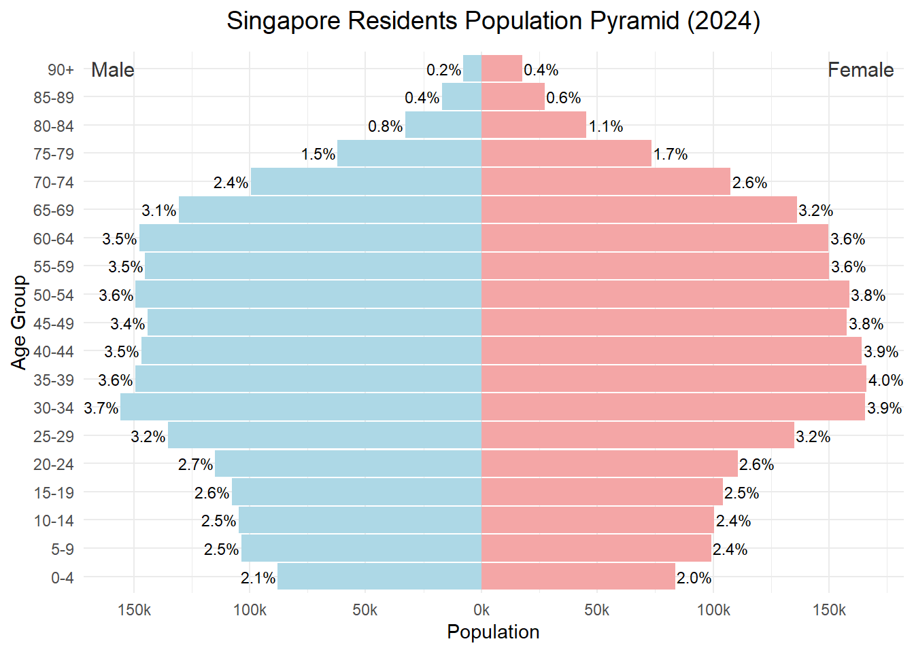
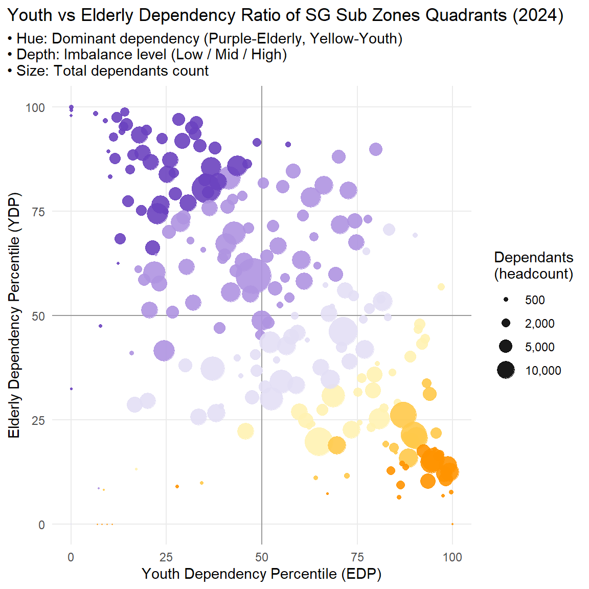
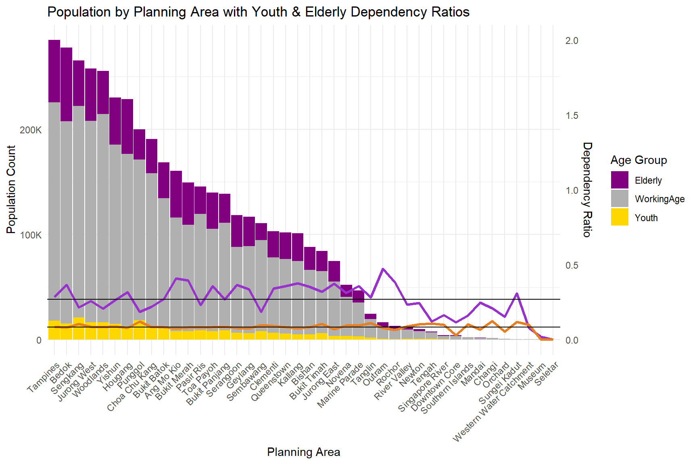

pacman::p_load(tidyverse, patchwork, ggrepel, ggthemes, hrbrthemes, scales, ggdist,dplyr)Take-Home Exercise 01: Demographic Structures and Distribution of Singapore in 2024
Overview
Task
A local online media company that publishes daily content on digital platforms is planning to release an article on demographic structures and distribution of Singapore in 2024. Assuming the role of the graphical editor of the media company, you are tasked to prepare at most three data visualisation for the article.
Data
To accomplish the task, Singapore Residents by Planning Area / Subzone, Single Year of Age and Sex, June 2024 dataset shares by Department of Statistics, Singapore (DOS) will be used.
Tool & Packages
This is an R based visual analytic task. Data will be processed by appropriate tidyverse family of packages and the data visualisation will be prepared using ggplot2 and its extensions.
tidyverse：a family of modern R packages specially designed to support data science, analysis and communication task including creating static statistical graphs.
patchwork：for combining multiple ggplot2 graphs into one figure.
ggrepel: an R package provides geoms for ggplot2 to repel overlapping text labels.
ggthemes: an R package provides some extra themes, geoms, and scales for ‘ggplot2’.
hrbrthemes: an R package provides typography-centric themes and theme components for ggplot2.
scales: provides the internal scaling infrastructure used by ggplot2
ggdist: for visualizations of distributions and uncertainty
The following code chunk uses p_load() of pacman package to check if tidyverse packages are installed in the computer. If they are, the libraries will be called into R.
Getting Started
Import Data
In this exercise, respopagesex2024.csv is used.
The code chunk below read_csv() of readr package is used to import respopagesex2024.csv data file into R and save it as an tibble data frame called sgresidence.
sgresidence <- read_csv("data/respopagesex2024.csv")Data Cleaning and Preparation
Use the code chunk below to view the data structure and summary data.
glimpse(sgresidence) Rows: 60,424
Columns: 6
$ PA <chr> "Ang Mo Kio", "Ang Mo Kio", "Ang Mo Kio", "Ang Mo Kio", "Ang Mo K…
$ SZ <chr> "Ang Mo Kio Town Centre", "Ang Mo Kio Town Centre", "Ang Mo Kio T…
$ Age <chr> "0", "0", "1", "1", "2", "2", "3", "3", "4", "4", "5", "5", "6", …
$ Sex <chr> "Males", "Females", "Males", "Females", "Males", "Females", "Male…
$ Pop <dbl> 10, 10, 10, 10, 10, 10, 10, 10, 30, 10, 20, 10, 20, 30, 30, 10, 3…
$ Time <dbl> 2024, 2024, 2024, 2024, 2024, 2024, 2024, 2024, 2024, 2024, 2024,…head(sgresidence, 10) # A tibble: 10 × 6
PA SZ Age Sex Pop Time
<chr> <chr> <chr> <chr> <dbl> <dbl>
1 Ang Mo Kio Ang Mo Kio Town Centre 0 Males 10 2024
2 Ang Mo Kio Ang Mo Kio Town Centre 0 Females 10 2024
3 Ang Mo Kio Ang Mo Kio Town Centre 1 Males 10 2024
4 Ang Mo Kio Ang Mo Kio Town Centre 1 Females 10 2024
5 Ang Mo Kio Ang Mo Kio Town Centre 2 Males 10 2024
6 Ang Mo Kio Ang Mo Kio Town Centre 2 Females 10 2024
7 Ang Mo Kio Ang Mo Kio Town Centre 3 Males 10 2024
8 Ang Mo Kio Ang Mo Kio Town Centre 3 Females 10 2024
9 Ang Mo Kio Ang Mo Kio Town Centre 4 Males 30 2024
10 Ang Mo Kio Ang Mo Kio Town Centre 4 Females 10 2024str(sgresidence) spc_tbl_ [60,424 × 6] (S3: spec_tbl_df/tbl_df/tbl/data.frame)
$ PA : chr [1:60424] "Ang Mo Kio" "Ang Mo Kio" "Ang Mo Kio" "Ang Mo Kio" ...
$ SZ : chr [1:60424] "Ang Mo Kio Town Centre" "Ang Mo Kio Town Centre" "Ang Mo Kio Town Centre" "Ang Mo Kio Town Centre" ...
$ Age : chr [1:60424] "0" "0" "1" "1" ...
$ Sex : chr [1:60424] "Males" "Females" "Males" "Females" ...
$ Pop : num [1:60424] 10 10 10 10 10 10 10 10 30 10 ...
$ Time: num [1:60424] 2024 2024 2024 2024 2024 ...
- attr(*, "spec")=
.. cols(
.. PA = col_character(),
.. SZ = col_character(),
.. Age = col_character(),
.. Sex = col_character(),
.. Pop = col_double(),
.. Time = col_double()
.. )
- attr(*, "problems")=<externalptr> summary(sgresidence) PA SZ Age Sex
Length:60424 Length:60424 Length:60424 Length:60424
Class :character Class :character Class :character Class :character
Mode :character Mode :character Mode :character Mode :character
Pop Time
Min. : 0.0 Min. :2024
1st Qu.: 0.0 1st Qu.:2024
Median : 20.0 Median :2024
Mean : 69.4 Mean :2024
3rd Qu.: 90.0 3rd Qu.:2024
Max. :1180.0 Max. :2024
Insight from the data structure
The dataset contains 60,424 rows and 6 variables, describing Singapore’s resident population by planning area, subzone, single year of age, sex, and population count, as of June 2024.
PAandSZare character variables representing planning areas and subzones, respectively.Ageis a categorical variables in character format, indicating demographic groups which will be converted to numeric for analysis.Sexis a categorical variable with values"Males"and"Females", which will be standardized to"Male"and"Female".Popis a numeric variable representing the number of residents in each demographic segment. The population values range from 0 to 1,180, with a median of 20, suggesting that most records represent small population counts at a fine-grained level (e.g., age–sex–subzone).Since records with 0 population do not contribute to aggregate demographic statistics or visualizations, we removed all rows where
Pop = 0. This ensures that all retained records represent meaningful demographic segments, streamlining the analysis and improving the clarity of visual outputs.Timeis a characteristically constant variable, with all values equal to 2024. Since it contains no variation, it will be removed from the analytical dataset or used solely for reference in visualization annotations.
Check missing values
The outcome of the code shows that there is no missing value in this sgresidence.csv.
colSums(is.na(sgresidence)) PA SZ Age Sex Pop Time
0 0 0 0 0 0 Convert Age to Numeric Value
The dataset includes an open-ended age group labeled "90_and_Over", which was recoded as "90" for analysis. While this simplification may slightly understate the true average age among the elderly, the affected population comprises only 0.603% of the total and does not significantly distort demographic patterns at an aggregate level.
sgresidence <- sgresidence %>%
mutate(age = as.integer(Age))The outcome says mutating data type leads to NA so check which part lead to this issue
sgresidence %>%
filter(is.na(as.integer(Age))) %>%
distinct(Age)# A tibble: 1 × 1
Age
<chr>
1 90_and_OverCheck the proportion of 90 and over age group
sgresidence %>%
filter(Age == "90_and_Over") %>%
summarise(total_90plus = sum(Pop)) %>%
mutate(total_pop = sum(sgresidence$Pop),
percent = total_90plus / total_pop * 100)# A tibble: 1 × 3
total_90plus total_pop percent
<dbl> <dbl> <dbl>
1 25290 4193530 0.603sgresidence <- sgresidence %>%
mutate(
Age = ifelse(Age == "90_and_Over", "90", Age),
age = as.integer(Age)
)Standardise Sex
The Sex variable is a categorical field originally recorded as "Males" and "Females". For consistency and clarity in analysis and visualization, these values were standardised to "Male" and "Female" respectively.
sgresidence <- sgresidence %>%
mutate(Sex = recode(Sex,
"Males" = "Male",
"Females" = "Female"))Remove Rows with Pop = 0
sgresidence <- sgresidence %>%
filter(Pop > 0)Drop Time Col
Since all the data are in the same time, we drop this column
sgresidence <- sgresidence %>% select(-Time)◼︎ Visualisation 1. Population Pyramid
Preparing the Dataset for the Population Pyramid
This code prepares the dataset required to create a grouped and mirrored population pyramid:
Grouping by Age Group and Sex:
The datasetsgresidenceis grouped by 5-year age intervals andSexusing thecut()andgroup_by()functions. This step ensures population values are aggregated into standard demographic segments.Summing the Population:
For eachage_groupandSexcombination, the total population is calculated usingsum(Pop). This provides the count of people within each demographic bin.Computing Percentages and Labels:
Within each gender group, the proportion of each age group is computed (percent = Pop / total). Labels with one decimal point (e.g.,"7.2%") are created for display next to bars.Adjusting Population Values for Males:
To construct a mirrored population pyramid, population counts for males are multiplied by-1. This positions male bars on the left side and female bars on the right.Preparing Axis Breaks and Annotations:
Auxiliary variables are computed (max_y,top_age_group) to help position axis breaks and top annotations like “Male” and “Female”.
# Step 1: Calculate total population
total_pop <- sum(sgresidence$Pop)
# Step 2: Aggregate and calculate percent based on total population
pyramid_percent <- sgresidence %>%
mutate(age_group = cut(age,
breaks = c(seq(0, 90, by = 5), Inf),
right = FALSE,
labels = c(str_c(seq(0, 85, 5), "-", seq(4, 89, 5)), "90+"))) %>%
group_by(age_group, Sex) %>%
summarise(Pop = sum(Pop), .groups = "drop") %>%
mutate(
percent = Pop / total_pop * 100, # ✅ Percent relative to total population
Pop_scaled = if_else(Sex == "Male", -Pop, Pop),
label = str_c(sprintf("%.1f", percent), "%")
)# Step 3: Annotations
top_age_group <- pyramid_percent %>%
pull(age_group) %>%
unique() %>%
as.character() %>%
tail(1)
max_y <- max(pyramid_percent$Pop)# Step 4: Plotting
ggplot(pyramid_percent, aes(x = age_group, y = Pop_scaled, fill = Sex)) +
geom_col(width = 0.95) +
geom_text(aes(label = label,
hjust = if_else(Sex == "Male", 1.05, -0.05)),
size = 3) +
geom_vline(xintercept = c(-150000, -100000, -50000, 50000, 100000, 150000),
color = "grey80", linetype = "dashed", linewidth = 0.3) +
coord_flip() +
scale_y_continuous(
breaks = seq(-150000, 150000, by = 50000),
labels = function(x) paste0(abs(x) / 1000, "k")
) +
scale_fill_manual(values = c("Male" = "#ADD8E6", "Female" = "#F4A6A6")) +
annotate("text", x = top_age_group, y = -max_y * 0.9, label = "Male", hjust = 1, size = 4, color = "gray20") +
annotate("text", x = top_age_group, y = max_y * 0.9, label = "Female", hjust = 0, size = 4, color = "gray20") +
labs(
title = "Singapore Residents Population Pyramid (2024)",
x = "Age Group",
y = "Population"
) +
theme_minimal() +
theme(
legend.position = "none",
plot.title = element_text(hjust = 0.5, size = 14, margin = margin(b = 10))
)Singapore Residents Population Pyramid (2024)
The Singapore Residents Population Pyramid (2024) plots absolute population on the x‑axis (in thousands, “k”) and 5‑year age groups on the y‑axis, with males (light blue) on the left and females (light red) on the right. Percent labels above each bar show that cohort’s share of the total national population.

Insights from Singapore Residents Population Pyramid (2024)
Age‑Structure Insights
| Observation | Explanation | Implication |
|---|---|---|
| Narrow Base 0–4 yrs ≈ 2.0–2.1 %, 5–14 yrs ≈ 2.4–2.5 % | Persistently low fertility; few future labour‑market entrants | Education demand will shrink; fertility incentives or young‑skilled immigration may be needed |
| Pronounced Middle Bulge – 30–49 yrs ≈ 3.8–4.0 % each | Core working‑age cohorts dominate, driving current GDP | In 10–15 years this group retires; pension & re‑skilling systems must be ready |
| Moderate Ageing – 65–74 yrs 2.4–3.2 %, 75–84 yrs < 2 % | Early‑stage ageing, “beehive” not yet inverted | Step‑wise expansion of elder‑care & health services is required |
| Rising Dependency Ratio | Seniors growing faster than children while the working share shrinks | Higher fiscal and social‑security pressure; need to lift labour‑force participation & delay retirement |
Sex‑Structure Insights
| Age band | Male vs Female | Interpretation |
|---|---|---|
| 0–14 yrs | Slight male surplus (normal biological sex ratio) | No evidence of sex‑selective behaviour |
| 15–64 yrs | Virtually symmetric bars | Gender balance in the labour force fosters economic stability |
| 65 + yrs | Female bars exceed male bars, gap widens 75 + | Higher female life expectancy; ageing policy must address the needs of older women |
Key Take‑Aways
Low‑fertility, early‑ageing profile – The pyramid has a narrow base and moderate top, signalling declining births and a gradual demographic transition toward ageing.
Late‑stage demographic dividend – The 30–49 bulge still powers the economy but will soon shift into retirement.
Healthy overall sex ratio – Only the expected female advantage at advanced ages; no structural gender imbalance.
Policy Priorities
Boost fertility through childcare, housing and family incentives.
Extend working lives via lifelong learning, re‑skilling, and flexible retirement.
Scale up community healthcare and long‑term‑care capacity, with a focus on elderly women living alone.
Selectively attract young, skilled immigrants to stabilise the age pyramid and sustain growth.
The 2024 pyramid shows Singapore moving from the tail‑end of its demographic dividend toward an ageing society. While gender balance remains healthy, policymakers must simultaneously counter low fertility and prepare for rising dependency to secure long‑term social and economic resilience.
undefined
◼︎ Visualisation 2. Dependency‑Quadrant Visualisation
This section presents the construction of a quadrant visualization to analyze the demographic dependency structure across Singapore’s subzones. The chart compares youth dependency and elderly dependency in percentile terms, using color and size to communicate dominant patterns and relative magnitudes.
Data Preparation
We first categorize each age into three dependency groups:
Youth: individuals under 15 years old
Working-age: individuals aged 15 to 64 (15 is lower legal working age limit in SG)
Elderly: individuals aged 65 and above
From this classification, we compute:
YDR (Youth Dependency Ratio) = Youth / Working-age
EDR (Elderly Dependency Ratio) = Elderly / Working-age
Total Dependants = Youth + Elderly
Dominant Group:
"Y_dom"if YDR > EDR; otherwise"O_dom"Log Ratio:
log(EDR / YDR), taking the absolute value later to reflect imbalance magnitude
## 1 ────────── Calculate ratios
dep_sz <- sgresidence %>%
mutate(group = case_when(
age < 15 ~ "Youth",
age >= 65 ~ "Elderly",
TRUE ~ "Working")) %>%
group_by(SZ, group) %>%
summarise(Pop = sum(Pop), .groups = "drop") %>%
pivot_wider(names_from = group, values_from = Pop, values_fill = 0) %>%
mutate(
YDR = Youth / Working,
EDR = Elderly / Working,
Dependants = Youth + Elderly,
grp = if_else(YDR > EDR, "Y_dom", "O_dom"),
log_ratio = log(pmax(EDR, 1e-6) / pmax(YDR, 1e-6)), # avoid log(0)
YDR_pct = percent_rank(YDR) * 100,
EDR_pct = percent_rank(EDR) * 100
)Measuring Imbalance Levels
We use the absolute value of the log-ratio between EDR and YDR to reflect the strength of demographic imbalance in a given subzone:
Small log-ratios indicate near-equal youth and elderly burdens
Large log-ratios reflect a strong dominance of one group over the other
We segment this imbalance measure into three levels — Low, Mid, and High — using tertiles (33% quantiles).
## 2 ────────── Discretize log_ratio into "Low" / "Mid" / "High"
dep_plot <- dep_sz %>%
mutate(
imbalance = cut(abs(log_ratio),
breaks = quantile(abs(log_ratio), probs = c(0, 1/3, 2/3, 1)),
labels = c("Low", "Mid", "High"),
include.lowest = TRUE))位置：YDR 和EDR的percentile comparing with other subzones
colour：how severe the imbalance is between EDR and YDR. Imply the future trend
Size: population count of Youth+Elder
Applying a Stepped Color Scheme
To represent the dominant burden and imbalance depth visually, we assign a stepped color palette:
Hue (Yellow vs. Purple) shows whether youth or elderly is dominant
Shade (Light to Dark) encodes the magnitude of imbalance (Low → High)
For example, a subzone with youth dominance and high imbalance appears in dark orange, while a balanced elderly-dominant subzone appears in light purple
## 3 ────────── Define stepped color table
col_tbl <- tribble(
~grp, ~imbalance, ~col,
"Y_dom", "Low", "#FFF2B2",
"Y_dom", "Mid", "#FFC94A",
"Y_dom", "High", "#FF9300",
"O_dom", "Low", "#E3DFF5",
"O_dom", "Mid", "#AF94E1",
"O_dom", "High", "#6B42BF"
)
## 4 ────────── Merge color
dep_plot <- dep_plot %>%
left_join(col_tbl, by = c("grp", "imbalance"))Plotting the Quadrants
The final plot is structured as follows:
X-axis: Youth Dependency Percentile
Y-axis: Elderly Dependency Percentile
Quadrant lines: At 50th percentiles of YDR and EDR, separating 4 zones
Color: Encodes dominance and imbalance
Size: Represents the absolute number of dependants (youth + elderly)
This layered design provides a multi-dimensional view of demographic pressures at the subzone level, offering both comparative and magnitude-based insights.
## 5 ────────── Plot
ggplot(dep_plot, aes(YDR_pct, EDR_pct)) +
geom_hline(yintercept = 50, color = "gray60") +
geom_vline(xintercept = 50, color = "gray60") +
geom_point(aes(size = Dependants, color = col), alpha = 0.9) +
scale_colour_identity() +
scale_size_area(max_size = 12,
breaks = c(500, 2000, 5000, 10000),
labels = comma,
name = "Dependants\n(headcount)") +
labs(
title = "Youth vs Elderly Dependency Ratio of SG Sub Zones Quadrants (2024)",
subtitle = "• Hue: Dominant dependency (Purple-Eldery, Yellow-Youth) \n• Depth: Imbalance level (Low / Mid / High) \n• Size: Total dependants count",
x = "Youth Dependency Percentile (YDP)",
y = "Elderly Dependency Percentile (EDP)"
) +
theme_minimal(base_size = 11) +
theme(
panel.grid.minor = element_blank(),
plot.title.position = "plot"
)Youth vs Elderly Dependency Ratio of SG Sub Zones Quadrants (2024)
This quadrant map visualizes the Youth vs Elderly Dependency Percentiles across Singapore subzones in 2024. The x-axis represents the Youth Dependency Percentile (YDP) and the y-axis shows the Elderly Dependency Percentile (EDP) — both based on national rankings rather than geographic location. Each point represents a subzone, colored by the dominant dependency type (yellow for youth-dominated, purple for elderly-dominated), shaded by the imbalance magnitude, and sized according to the total dependent population (youth + elderly).

Insight from Youth vs Elderly Dependency Ratio of SG Sub Zones Quadrants (2024)
Subzones in deeper hues (both purple and orange) reflect stronger demographic imbalance, which could indicate future demographic stress if left unaddressed.
Larger points reflect zones where even modest imbalances may be magnified due to high absolute dependents, suggesting priority targets for public investment.
Demographic Insights by Quadrant:
Top-right quadrant (High YDP, High EDP):
Subzones with dual dependency pressures. They face the heaviest overall burden, with both large youth and elderly populations. These zones may need multi-generational policy interventions and robust community support systems.Bottom-right quadrant (High YDP, Low EDP):
Subzones here have a high concentration of young dependents and relatively few elderly. These areas likely include young families or newer developments and may require greater educational and childcare infrastructure.Top-left quadrant (Low YDP, High EDP):
These areas are elderly-dominant, with a high burden of aging populations but fewer children. Strategic planning should focus on eldercare services, mobility aids, and healthcare access.Bottom-left quadrant (Low YDP, Low EDP):
Likely working-age concentrated zones or non-residential hubs, indicating minimal demographic burden. These areas may serve as commercial or industrial centers.
◼︎ Visualisation 3. Population by Planning Area with Youth & Elderly Dependency Ratios
To construct a stacked bar chart with dependency ratios across Singapore’s planning areas, the dataset is first transformed by grouping residents into three age categories:
Youth: Below 15 years old
WorkingAge: 15 to 64 years old
Elderly: 65 years and above
The working-age population forms the denominator for both youth and elderly dependency ratios. The total population is calculated to scale dependency ratios appropriately for plotting. The data is also reshaped into long format to support stacked bar rendering in ggplot2.
# 1. Categorize by Age Group and summarize population
df_agegroup <- sgresidence %>%
mutate(AgeGroup = case_when(
Age < 15 ~ "Youth",
Age <= 64 ~ "WorkingAge",
TRUE ~ "Elderly"
)) %>%
group_by(PA, AgeGroup) %>%
summarise(Pop = sum(Pop), .groups = "drop") %>%
pivot_wider(names_from = AgeGroup, values_from = Pop, values_fill = 0) %>%
mutate(
TotalPop = Youth + WorkingAge + Elderly,
ElderlyRatio = Elderly / WorkingAge,
YouthRatio = Youth / WorkingAge
)Plot the Chart
# 2. Reshape to long format for stacked bar chart
df_age_long <- df_agegroup %>%
pivot_longer(cols = c("Youth", "WorkingAge", "Elderly"),
names_to = "AgeGroup", values_to = "Pop") %>%
mutate(PA = fct_reorder(PA, -Pop, .fun = sum))
# 3. Compute median values for annotation lines
median_edr <- median(df_agegroup$ElderlyRatio, na.rm = TRUE)
median_ydr <- median(df_agegroup$YouthRatio, na.rm = TRUE)
max_pop <- max(df_agegroup$TotalPop)
# 4. Define custom color palette for age groups
custom_colors <- c(
"Youth" = "#FFD700", # Gold
"WorkingAge" = "#B0B0B0", # Gray
"Elderly" = "#800080" # Purple
)
# 5. Create the plot
ggplot(df_age_long, aes(x = PA, y = Pop, fill = AgeGroup)) +
geom_bar(stat = "identity", width = 0.95) +
# Elderly Dependency Ratio line (deep purple)
geom_line(
data = df_agegroup,
aes(x = PA, y = ElderlyRatio * max_pop / 2, group = 1),
inherit.aes = FALSE, color = "#9932CC", size = 1.2
) +
# Youth Dependency Ratio line (deep orange)
geom_line(
data = df_agegroup,
aes(x = PA, y = YouthRatio * max_pop / 2, group = 1),
inherit.aes = FALSE, color = "#E67E22", size = 1.2
) +
# Median Elderly Dependency Ratio (black line)
geom_hline(
yintercept = median_edr * max_pop / 2,
color = "black", linetype = "solid", size = 0.5
) +
# Median Youth Dependency Ratio (black line)
geom_hline(
yintercept = median_ydr * max_pop / 2,
color = "black", linetype = "solid", size = 0.5
) +
scale_fill_manual(values = custom_colors) +
scale_y_continuous(
name = "Population Count",
sec.axis = sec_axis(~ . * 2 / max_pop, name = "Dependency Ratio"),
labels = label_number(scale_cut = cut_short_scale())
) +
labs(
title = "Population by Planning Area with Youth & Elderly Dependency Ratios",
x = "Planning Area",
fill = "Age Group"
) +
theme_minimal() +
theme(
axis.text.x = element_text(angle = 45, hjust = 1),
legend.position = "right"
)Population by Planning Area with Youth & Elderly Dependency Ratios
The visualises the age structure and demographic burden across Singapore’s planning areas. It features:
Stacked bar segments showing population counts by age group:
Yellow for Youth (aged below 15),
Gray for Working-age (15–64), and
Purple for Elderly (65+).
Two overlaid lines represent dependency ratios:
A purple line shows the Elderly Dependency Ratio (EDR = Elderly / Working-age),
An orange line represents the Youth Dependency Ratio (YDR = Youth / Working-age).
Two black horizontal lines indicate the national median values for both EDR and YDR, serving as benchmarks.
Planning areas are ordered by total population, from left (most populous) to right (least).

Insight from Population by Planning Area with Youth & Elderly Dependency Ratios
1. Population Distribution Is Highly Uneven
The chart reveals a long-tail distribution: a small number of planning areas (e.g., Tampines, Bedok, Sengkang) account for a disproportionately large share of Singapore’s residents.
In contrast, many planning areas on the right — such as Southern Islands, Museum, or Western Water Catchment — have negligible populations and minimal demographic relevance.
Implication: Policies addressing population aging or youth development should focus primarily on top-tier planning areas where interventions impact the most people.
2. Elderly Dependency Outpaces Youth Dependency
In most areas, the purple EDR line lies above the orange YDR line, signaling greater aging pressure than child-related burdens.
Mature estates such as Bukit Merah, Queenstown, and Toa Payoh exhibit above-median elderly ratios, pointing to aging-in-place dynamics.
3. Dependency Burden Must Be Interpreted Alongside Population Scale
- A high dependency ratio in a low-population area (e.g., Seletar) is less critical than a moderate ratio in a highly populated town (e.g., Tampines or Jurong West).